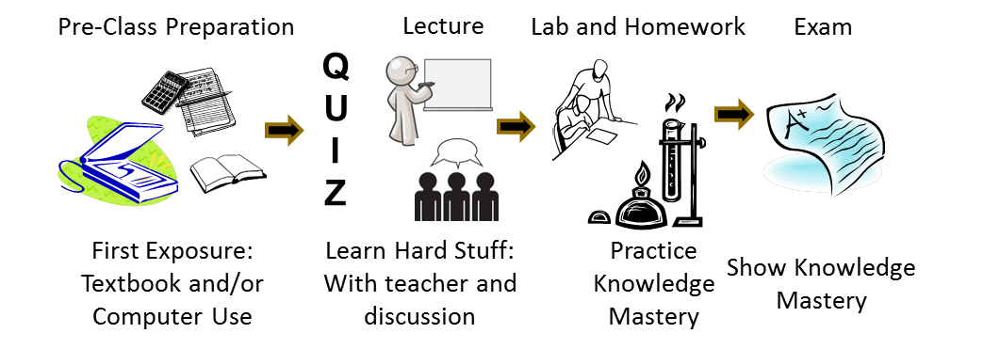
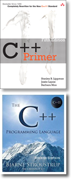

Hello, my name is Stephen Gilbert. Welcome to the Orange Coast College CS 150 information page. We are offering four sections of CS 150 this semester. This is the syllabus for the two live-online sections which I'll be teaching. We are also offering two hybrid sections of the class, taught by Dr. Justin Jang.
CS 150 is a second semester programming class for Computer Science and Engineering majors who intend to transfer to a 4-year university. To enroll in CS 150 you must first complete CS 170 (Java Programming) here at OCC, or apply for a prerequisite waiver. You'll find more information on the prerequisite below.
The following sections of CS 150 are taught in a synchronous live-online format. You will attend a lecture (via Zoom) twice a week.
Each live-online class meeting period consists of lecture, hands-on demonstration, programming exams and written exams. You must attend and participate in the live-online portion of the class; it is not optional. If you have a scheduling conflict, then please change to a different section.
Here's the official course description from the OCC catalog:
A first course in the ANSI/ISO Standard C++ programming language. Topics include data types, strings, operators, expressions, control flow, storage classes, input/output, functions, pointers, arrays, preprocessor, file I/O, standard library routines, function overloading, object construction and inheritance, object-oriented design and recursion.
May be taken for a grade or on a credit/no-credit basis. Three and one-half hours lecture, one and one-half hours non-lecture.
At OCC prerequisites are enforced for Computer Science classes. You can be cleared in the registration system for enforced Prerequisites and Co-Requisites in one of three ways:
Computer Science 150 is a course in computer programming that uses the ANSI/ISO C++ programming language to teach structured and object-based programming techniques.
There are several reasons why you might want to take CS 150:
A computer programming course really has two parts. The first part is simply learning the syntax or grammar that a particular language uses. You need to learn the specific keywords and control structures used by each language, as well as the common idioms used to express generic computer algorithms.
The second part, however, is really more interesting. At its heart, a course in computer programming is a course in thinking and problem solving. It is also a lot of fun. Fred Brooks, the father of modern software engineering, lists five reasons why programming is fun:
The programmer, like the poet, works only slightly removed from pure thought-stuff. He builds his castles in the air, from air, creating by exertion of the imagination...Yet the program construct, unlike the poet's words, is real in the sense that it moves and works, producing visible outputs separate from the construct itself. It prints results, draws pictures, produces sounds, moves arms. The magic of myth and legend has come true in our time. One types the correct incantation on a keyboard, and a display screen comes to life, showing things that never were nor could be.
Programming then is fun because it gratifies creative longings built deep within us and delights sensibilities we have in common with all men.
--Frederick P. Brooks, Jr, The Mythical Man Month, 2nd Ed.
The ANSI/ISO C++ programming language is a multi-paradigm language. That means it can be used to write computer programs using several different methodologies or techniques. In this course, C++ Programming I, you will:
string and vector classes.
In CS 250, (C++ Programming II, the course that follows this course), you will study more advanced object-oriented and generic programming methods, learn to implement basic data structures, such as linked lists and binary trees, and learn more about the C++ Standard Template Library. You'll also learn to use the functional LISP programming dialect called Scheme (or Racket).
To help you master these programming techniques, you will be writing a lot of programs. Each week you will work on several discussion exercises during class, along with lecture. Along with the weekly reading, you'll complete short programming exercises along with the reading. Finally, each week you will complete several programing homework assignments, and take a reading quiz to assess your understanding.
It is important that you actually do the homework and reading exercises. In addition I encourage you to write small programs on your own to explore the language. You cannot passively absorb the material, and expect to pass the class; you must "learn by doing".
The purpose of these programming assignments—and the goals of the course—are that you:
Upon successful completion of the course, you will be able to:
The Student Learning Outcomes or CSLOs for CS 150 describe things you are expected to be able to do. After completing this class you'll be able to:
Your mastery of these CSLOs will be assessed by a series of hands-on programming exams.
Of course, this is the way that college courses have worked since the middle ages. Since then, though, there have been some great innovations. First, we had the printing press, so that knowledge could be encoded in books; you no longer had to "Trust the Monk" for every piece of information.
With Amazon, you can purchase "knowledge" and have it downloaded to your Kindle or delivered to your door in a day. What that means is, you don't have to try and find an expert in a topic; you can read a book and analyze it yourself. If all that happens in lecture is that I summarize or re-phrase what is said in the book, what purpose does that serve?
This "traditional" way of teaching makes it pretty easy for me to teach the class, but it's really not the best way for you to learn the material. That's because the only time you really interact with me (the "expert" after all), is when you don't know enough to ask any questions. By the time you get to the hard stuff, you're on your own.
In this class, we we'll do things a little bit differently. My goal is to give you more opportunities to get feedback on your learning from the "expert" (that's me ).
Since you are intelligent, and you can buy access to the basics of the knowledge needed for this class in the form of the textbook, I'll ask you to get your first exposure to the material by reading the book (or other assigned resources) and gaining an understanding of the "basics" for yourself.
To help you out, I'll provide you with a set of self-check questions in the form of a pre-lecture quiz that must be completed before each lecture section. Here's what our revised model looks like:  Now, you might be wondering "why a quiz before the lecture?" There are a few reasons:
During lecture, I'll be presenting some of the "hard stuff" which students often struggle with or which the book doesn't explain in detail. (After all, I do have years of experience with students making the same mistakes over and over again.) Sometimes I will "explain things" in a way that looks like lecture, but much of the time, I will be letting you test your understanding and deepen your understanding—by presenting a question for you to solve, and having you discuss it in a team of your peers, to make sure you really do get it.
Instead of using "clickers" to answer these questions (which are physical devices you have to purchase and remember to bring to class), we'll be using a software program which you can access from your class computer. For each question I ask, you will vote on your answer, so I can adapt what we do in class to address issues you are not sure about.
Finally in lab and with homework, you'll have a chance to practice your mastery of the material. And then, I'll let you show me how much you have mastered by taking several proficiency exams.
This process is based around giving you the opportunity to get access to expert help and explanation, when you need it; not leaving you alone at night when you are doing your homework.
It is also based in research on "how people learn". Researchers have shown that people each construct their own understanding—individually. It's not really possible for me to "dump" or transmit understanding into your brain. Each of you is a unique individual, and you will each need to work and construct your own understanding.
Everybody learns in different ways and at different speeds. CS 150 is a 4-unit class, designed to take 216 hours to complete, (if you want a B/C) grade. This works out to about 14.5 hours a week. You'll spend five of those hours live-online with your instructor, which leave you with about 9.5 hours on your own. If you're a good student or you're satisfied with a lower grade, you may get by with less. If you have difficulty with the material, or if you want to receive an A in the course, you'll probably have to spend more time.
You'll find that the material in CS 150 is very sequential. You can't really succeed by staying up all night every Sunday. Instead, you need to budget your time. Spend a couple hours every day, one hour reading the text, and one hour working on the exercises and homework assignments. Spreading out your time will really help you to absorb the material better and quicker. For most students, the best way to learn to program is to actually write programs.
Six reading lessons will be assigned for each week in the class, except for those weeks when a midterm exam is given. In those cases you'll have two weeks to complete the reading. Each lesson is accompanied by a set of short, hands-on exercises. You must read the lessons and do the exercises before the next live-online lecture.
Your instructor will preview the topics covered in the next set of lessons, but will not "read the textbook" to you. To make sure you've read the lessons, each week you will complete a reading quiz which you'll answer on Canvas. You will normally have 30 minutes to answer 30 questions. (The short time is to make sure you are answering the questions based on your reading, and not looking up the answers.) You can take each quiz twice, and your highest score is recorded.
Programming is a skill to be mastered. To make sure that you've mastered the programming topics, you'll take ten hands-on programming exams. These are closed-book, closed-notes, programming exams where you will be asked to demonstrate your proficiency with different aspects of C++.
You will have 45 minutes for each exam, strictly timed. The programming exams will be given during the scheduled live-online class meetings and may be proctored.
There will also be four written exams—three midterms and a final. The written exams may have both multiple-choice questions as well as short-answer and fill-in type questions. The written exams will be given on the computer.
If your final exam percentage grade is greater than your average midterm exam percentage, then the final exam (percentage) score will replace your midterm score.
All exams will take place during the regular "live-online" class session and may be proctored.
Learning to program is a lot like learning to play the tuba; you'll never be any good unless you practice. To help you do this, you'll spend most of your out of class time, and a portion of each class period, writing programs. Each week you'll complete several different programming problems from the material we've covered that week.
You'll complete these programming assignments as you read the textbook. Often the textbook will go over the solution, so you should be able to get 100% on the homework if you put in the time.
You must complete each assignment by its due date. You cannot makeup missed homework assignments after the fact. (You can work ahead, however.) You'll generally receive a with a test program, so you can "grade" yourself after you've finished the problem. If you do poorly on a problem, you can read through the solution, and then rewrite and re-grade your solution. When you rewrite your program, don't refer to the posted solution—that way you'll make sure you really understand how to write it.
When you are finished with each homework assignment, you'll submit a "completion code" generated by the test program.
One of the greatest learning resources at your disposal are the other students you'll meet in this class. Turning to StackOverflow (or Google) for help with your questions is not the best way to get them answered. The answer you receive (if any) is often wrong. Instead, take advantage of the fact that you have forty (or more) students who are facing exactly the same problems, and asking exactly the same questions you are asking.
To encourage you to help each other, use the online discussion area to ask all of your technical questions, instead of sending an email message. Let's keep email for "personal" correspondence—things like "I'll be missing class this Tuesday", instead of questions like "Why do I get this error message when I compile?" If you ask these types of questions on the discussion board, you'll help all the other students who are having the same problem, but didn't think to ask. (Your instructor will answer questions posted on the discussion board, after your fellow students have had an opportunity to respond. Your instructor also reads all of the messages on the discussion board.)
Class announcements and general tips will also be posted on the discussion board, as well as resources such as slides and starter files. Check the board regularly, (several times each week), for new announcements.
You may take this course for a grade, or on a P/NP basis. If you take the course for pass/no-pass, you must obtain a score equivalent to a "C" to get credit. (If you're transferring, though, make sure that the institution you're transferring to will accept P/NP; most institutions won't if it's a requirement for your major.) To receive a P/NP grade, you simply make a selection using MyOCC. (You no longer have to go to the Admissions and Records office.) However there is still a cutoff deadline to make your selection.
Cautionary Note: starting in 2019, UCI requires CS admits to get at least a B in every lower-division course in the major. If you are a CS major, and you intend to transfer to a UC, and you don't have at least a B at the drop deadline, you probably should take a W and try again later.
Grades will be assigned based on the following weights:
| 10 hands-on Programming Exams (25 points each) | 250 |
| Three written midterm exams | 150 |
| Written Final Exam | 150 |
| Weekly Reading Exercises | 150 |
| Programming Homework Assignments | 150 |
| Weekly Reading Quizzes | 100 |
| In-Class Exercise Documents | 50 |
Letter grades cutoff percentages: 90%->A, 78%->B, 62%->C 50%->D
There will be no additional curve or extra-credit.
 The reading for this class will be the online lessons from the CS 150 Course Reader which to which will be available for free on Canvas. If you want a printed reference text, I recommend two of them.
Stanley Lippmann's C++ Primer, 5th Edition. This covers the features in the new C++11 standard. The bookstore will have a few copies of the book; you can also get it at Amazon for about $40.
The definitive reference is Bjarne Stroustrup's C++ Programming Language. Make sure you get the 4th Edition, which covers C++ 11. On Amazon (today, right before Christmas), it was also $40, but I paid $60 for mine earlier in the year. On Piazza, I have a link to an early draft of the first five chapters, which was published separately as A Tour of C++.
For those of you who feel the need for a little refresher, I've also posted a link to an alternative CS1 C++ textbook on the Canvas home page.
This semester we will be teaching the course using the UNIX/Linux cloud-based servers provided by Harvard's CS50 infrastructure. We be using GitHub Classroom to store your source code. You will be able to log into your workspace from any computer and will not have to have any software installed locally.
You will set up and configure these accounts during the first live-online class session.
I don't accept late work on your homework. You must turn it in by the due date. You may turn in quizzes, reading exercises, and in-class exercises up to one day late for a penalty of 1% per hour. I will provide two "makeup" days (after the midterm and after the final) where you can take up to four of the programming exams you missed, (or retake those you did poorly on.) These makeup exams will be on Fridays at your normal live-online class meeting time.
If your percentage score on your written final exam is better than your combined midterm percentage, I'll "throw out" the midterm score, and use your final exam only for calculating the written exam portion of your final grade.
I will take attendance, and you are expected to be in class. If you miss two consecutive weeks of class sessions, you may be dropped without notice. Don't assume, though, that you will be automatically dropped if you fail to come to class. It is your responsibility to withdraw from any class. If you stop attending, yet fail to withdraw, you will receive a grade of 'F'.
Please pay special attention to the OCC drop deadlines. Every semester I have students who want to drop the class after the deadline to drop has already passed. Those students end up getting an 'F' in the class if they are unable to complete the coursework. I do not give Incomplete grades.
Programming by its nature relies on learning from the work of others. You are encouraged to examine each other's code and to discuss various approaches and coding styles. You won't really learn anything, though, if you don't "try it yourself".
In this regard, discussing the general method used to solve a problem is certainly encouraged. Taking another student's source code and modifying it is really counter-productive; you learn to program by working out the programming exercises and assignments. If you don't do the assignments yourself, you won't learn how to program, and you won't be able to pass the programming exams.
When it comes to testing time, I expect you to maintain a high level of academic honesty. Cheating on exams will result in course failure.
You are entitled to an environment that encourages learning, as are all your fellow students. You should not behave in a manner that negatively impacts other class members. In a classroom, such behavior includes hostile behavior such as yelling and screaming, as well as interrupting other students and attempting to inappropriately dominate the classroom. In our "online classroom", disruptive behavior includes "flaming" or harassing email, as well as posting offensive material on the class discussion board.
I expect all of you to be polite, respectful, and helpful to your fellow students; in short, I expect you to act like adults should act. If, in my judgment, your behavior negatively impacts the rest of the class, you may be subject to disciplinary action.
If you have a disability that may impede your ability to successfully complete this course, you should contact the Disabled Student's Center (432-5807 or 432-5604 TDD) not later than the first week of the course. Their staff will assist you in arranging accommodations that can help you meet course requirements.
I reserve the right to change this syllabus, including, without limitation, these policies, without prior notice.